Formats#
This page describes the four formats PROCTOR writes with --format: text, json, codequality and sarif. Pick the format your consumer reads, run the check once, and point the report where the consumer looks. One exam, four ways to file the mark sheet.
Choosing a format#
The default is text. Choose another with --format:
vendor/bin/proctor check --format=json
| Format | What it is |
|---|---|
text |
A header line with the tool and the versions of the external tools used (composer), then one line naming the policy in use (origin, path, refresh date), then one line per finding, then one line per override, then a RESULT line. |
json |
One machine-readable object with tool, version, path, today, result, exit, tools, policy, findings and overrides. |
codequality |
GitLab's Code Quality JSON: a single array of findings, so a merge request shows them. |
sarif |
A SARIF 2.1.0 log: one run, one rule per check, one result per non-pass finding, so GitHub code scanning and other SARIF viewers show them. |
text#
The default human-readable format: a header line with the tool and the versions of the external tools used, then one line per finding in check order, then one line per override, then a summary line:
proctor 0.16.0 | composer: 2.11.1
Policy: option (/app/policy.json), refreshed 2026-10-20, 7 days ago
PASS php-floor: php floor 8.4 is active
FAIL unbounded-constraints: vendor/a constraint "dev-master" is unbounded
OVERRIDE lock-committed: x (expires 2026-01-01, approved by t)
RESULT: fail (1 failures, 0 warnings)

The parts of a report:
- The header line is
proctor <version> | <tool>: <version>, one part per external tool joined with|, andunknownfor a tool whose version could not be determined. It is printed only when the run used external tools. - The policy line is
Policy: <origin> (<path>), refreshed <date>, <n> days ago, orPolicy: <origin> (<path>), no refresh datewhen the policy carries norefreshed_on. See Policy for where the policy comes from. - Each finding is one line:
<status> <check id>: <message>, where the status isPASS,INFO,WARNorFAIL. - Each override is one line:
OVERRIDE <check>: <reason> (expires <date>, approved by <approver>). - The summary is
RESULT: pass, orRESULT: fail (<failures> failures, <warnings> warnings).
Finding messages, override reasons and approvers come from files the app controls, so they are printed with terminal control characters replaced by a visible ?: an escape sequence or carriage return in one of them must not reach the log.
When the run could not decide (exit 2), the report is one FAIL line: FAIL proctor: <message>, the message cleaned the same way.
json#
One machine-readable object, pretty-printed on stdout. Slashes and Unicode are left unescaped, so the output stays readable.
- Top level:
tool,version,path,today(aYYYY-MM-DDdate),result(passorfail),exit(0 or 1),tools,policy,findings,overrides. policyholdsorigin,path,refreshed_onandage_days.- Each finding in
findingsholdscheck_id,rule_id,status,message,pathandline. An advisory finding carries anadvisoriesarray with one entry per advisory (package, id, cve, title, link, severity); an abandoned-package finding (proctor/composer-audit/abandoned) carries one entry with the package and its suggested replacement (a package name or null), so a package-scoped override can match it; other findings have no such key. - Each entry in
overridesholdscheck,reason,expires,approved_byandexpired, computed fromtoday.
When the run itself stops before a report exists, PROCTOR writes the report shape with result set to error, an error field carrying the message, today and policy set to null, and empty findings and overrides, so a CI upload still gets a valid document. When the report cannot be encoded, PROCTOR fails the run with a tool error (exit 2): Could not encode the JSON report: <reason>, and writes that same error document.
codequality#
GitLab's Code Quality JSON: a single array of findings on stdout, so a merge request shows them. One object per non-pass finding, each with:
description: the finding message.check_name: the rule id.fingerprint: the stable identity of the finding (below).severity:majorfor a fail,minorfor a warning,infofor an info.location:pathandlines.begin; the path falls back tocomposer.jsonwhen the finding has none.
When the run itself fails before a report exists, PROCTOR still writes one item: severity blocker, check name proctor, line 1, so the merge request shows why the run stopped instead of an empty array.
sarif#
A SARIF 2.1.0 log: one run, one rule per check, one result per non-pass finding, so GitHub code scanning and other SARIF viewers show them. See GitHub code scanning for the workflow that uploads the log.
- The driver block names the tool
proctor, its version, and the repository's information URI. - The rules list holds one entry per distinct rule id in the report, in first-seen order, each with a short description carrying the id.
- Each result holds
ruleId,level,message.textand one location. The level mapsfailtoerror,warningtowarning, and any other non-pass status tonote. - The location uses the finding's path (backslashes normalized to forward slashes) and its line as
region.startLine; a finding without a path points at the app'scomposer.json. - Each result also carries
partialFingerprintswith the finding's fingerprint underproctorFingerprint/v1.
When the run could not decide (exit 2), the log holds one run with no results, and its invocation reports executionSuccessful false with the message in a toolExecutionNotifications entry of level error, so code scanning shows why instead of an empty log.
The fingerprint#
Both codequality and sarif identify a finding with the same fingerprint, its stable identity: the lower-case hex SHA-256 of the rule id, a newline, the path (an empty string when the finding has none), a newline, and the message.
proctor gate#
proctor gate writes text or json only: a short go or no-go verdict for the deploy log, or the same verdict as JSON, which also works as the next run's baseline. Its shape is on the Deploy gate page.